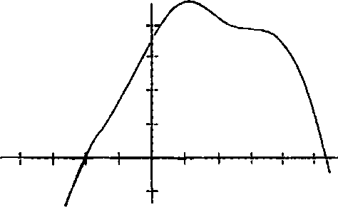

Hep olan şey şuydu: Colin, Şeytanın Cenaze Arabası’mn anahtarlarını arayıp durur, en nihayetinde de teslim olup, “İyi be. Soktuğumun otobüsüne binerim,” der ve kapıya giderken anahtarları görürdü. Anahtarların kendini» otobüse razı ettiğinizde ortaya çıkması gibi, Katherine’ler de dünyada bir başka Katherine olduğuna dair inancınızdan vazgeçtiğinizde ortaya çıkıyordu ve tabii ki Evreka anı da Colin bunun asla gelmeyeceğini kabul etmeye başladığında gerçekleşmişti.
Heyecanının içini kasıp kavurduğunu hissetti, fikri bir bütün olarak hatırlamaya çabalarken gözlerini kırpıp duruyordu. Yapış yapış, basık havada sülüstü yatarken Evreka anı aynı anda gerçekleşen bin orgazma bedeldi... o kadar pasaklı olmaması dışında.
“Evreka mı?” dedi Hasan, sesinden de belli olan bir heyecanla. Bunu o da bekliyordu.
“Not almam lazım,” dedi Colin. Oturdu. Başı deli gibi acıyordu ama elini cebine sokup hep yanında taşıdığı küçük defter ile düştüğü sırada kırılmış ama hâlâ yazan 2B kalemi çıkardı. Sonra çizdi:

* = zaman, y = mutluluk ise, y = 0 ilişki başlangıcı ve aynlık, y eksi = erkeğin ayrılması vey artı = kadının ayrılması: benim K19'la ilişkim.
Lindsey Lee Wells’in geldiğini duyduğunda hâlâ çiziktiriyordu ve gözlerini açıp bakınca yeni bir tişört giydiğini (üstünde GUTSHOT! yazıyordu) ve tepesinde harbiden kızıl haç olan bir ilkyardım çantası taşıdığını gördü.
Yanına diz çöküp Colin in kafasındaki tişörtünü yavaşça çekerken, “Bu canını yakacak,” dedi ve acı biber sosuna batırılmış gibi görünen bir kulak pamuğuyla kesiğe bastırdı.
“SOKIYİM!” diye haykırdı Colin irkilerek ve başını kaldırınca kızın çakşırken yuvarlak, kahverengi gözlerini terden kırpıştırdığıhı gördü.
“Tamam. Pardon. İşte oldu. Dikişe gerek yok ama yara izi kalacağı kesin. Sorun olmaz, değil mi?”
“Bir başka yara olmuş çok mu?” dedi Colin dalgın dalgın, Lindsey alnına geniş bir gazlı bez sararken. “Beynimden yumruk yemiş gibi hissediyorum.”
“Sarsıntıdan olabilir,” dedi Lindsey. “Bugün günlerden ne? Neredesin?”
“Salı günü ve Tennessee’deyim.”
“1873 yılında New Hampshire’daki senatör kimdi?” diye sordu Hasan.
“Bainbridge Wadleigh,” diye yanıtladı Colin. “Sarsıntı geçirdiğimi sanmıyorum.”
“Gerçekten mi?” diye sordu Lindsey. “Yani sen bunu biliyor muydun sahiden?”
Colin başıyla yavaşça onayladı. “Evet,” dedi. “Tîim senatörleri biliyorum. Ayrıca bunu hatırlamak kolay çünkü tek yapmam gereken herifin annesiyle babasımn ona Bainbridge VVadleigh ismini koymak için ondan ne kadar nefret etmiş olabileceğini düşünmek.”
“Harbiden,” dedi Hasan. “Yani soyadın zaten Wadleigh. Sırf Wadleigh olmak bile felaketken bir de Wadleigh’i Bainbridge diye iyice rezil ediyorsun. Zavallı herif neden başkan olamamış belli.”
Lindsey ekledi: “Ama Millard Fillmore diye bir adam başkan olabildi. Çocuğunu seven hiçbir anne bir Fıllmore’u Millard yapmaz.” Onlarla o kadar çabuk ve rahat bir şekilde sohbete girmişti ki Colin Celebrity Living teorisini gözden geçirmeye başlamıştı bile. Cehennemindibi, Tennessee’deki
insanların Lindsey Lee VVells’ten daha aptal olacaklannı düşünmüştü hep.
Hasarı, Colinln yanına oturup defterini kaptı. “Beni heveslendirip büyük keşfinin terk edilmekten zevk aldığınla ilgili olduğunu mu söylüyorsun yani? Of Colin bunu sana ben de söylerdim zaten. Hatta söylemiştim.”
“Sevgi şemalanabilir!” diye kendini savundu Colin.
“Bir saniye.” Hasan tekrar nodara baktı, ardından Coline döndü. “Evrensel olarak mı? Bunun herkes için işe yarayacağını mı iddia ediyorsun?”
“Aynen. Ne de olsa ilişkileri tahmin etmek kolay, değil mi? Ben de tahmin etmenin bir yöntemini buluyorum işte. Herhangi iki kişiyi ele alalım, birbirleriyle hiç tanışmamış olsalar bile formül ilişki yaşamaları durumunda kimin kimi terk edeceğini ve ilişkinin aşağı yukarı ne kadar süreceğini gösterecek.”
“İmkânsız,” dedi Hasan.
“Hayır değil çünkü insanların nasıl hareket ettikleriyle ilgili temel bir anlayışa sahipsen geleceği görebilirsin.”
Hasanın yavaş ve uzun uzun verdiği nefesi fısıltıya dönüştü. “Peki. Tamam. Bu ilginç işte.” Hasanın Colin’e daha büyük bir iltifat etmesi mümkün değildi.
Lindsey Lee Wells uzanıp defteri Hasandan aldı. Yavaş yavaş okudu. Sonunda, “K19 ne be?” diye sordu.
Colin kupkuru topraktan destek alıp kalktı. “O ne dediğin şey kim olacak,” diye yanıt verdi. “XIX. Katherine. Katherine isimli on dokuz kızla çıktım.”
Lindsey Lee Wells ile Colin çok uzun süre birbirlerinin gözlerinin içine baktılar, sonunda Lindsey gülmeye başladı. “Ne var?” diye sordu Colin.
Lindsey başını salladı ama gülmeden duramıyordu. “Yok bir şey,” dedi. “Hadi gidip Arşidüke bakalım.”
“Hayır, söyler misin?” diye ısrar etti Colin. Kendisinden sır saklanmasını sevmiyordu. Bir şeylerin dışında bırakılmak canını sıkıyordu... olması gerekenden de fazla hatta.
“Bir şey olduğu yok. Ben... ben sadece bir erkekle çıktım.”
“Bunun nesi komik?” diye sordu Colin.
“Komik,” dedi Lindsey, “çünkü ismi Colin.”
Başlangıcın Ortası
Üçüncü sınıfa gelindiğinde Colin’in “sosyal sağlığa” kavuşmaktaki başarısızlığı o kadar bariz hale gelmişti ki Colin, Kalman’a sadece üç saat gider olmuştu. Gününün geri kalanını, ÇILLGIN plakalı bir Volvo kullanan, hayatı boyunca eğitmenliğini yapmış Keith Carter’la geçiriyordu. Keith bir türlü atkuyruğu aşamasını atlatamamış adamlardandı. Aynı zamanda ağzı kapalıykenİd bu nadiren gerçekleşiyordualt dudağına kadar uzanan gür ve geniş bir bıyık bırakıyordu (ya da besliyordu demek daha doğru). Keith konuşmaya bayılıyordu ve en sevdiği kitle Colin Singletondı.
Keith, Colin’in babasının bir arkadaşı ve psikoloji profesörüydü. Coline duyduğu ilgi tamamen cömertliğinden kaynaklanmîyordu. Yıllar içinde Colinin zekâsıyla ilgili birkaç makale yayımlamıştı. Bilim insanlarının ilgisini çekecek kadar özel olmak Colinin hoşuna gidiyordu. Hem Çıllgın Keith, Colinin dost olarak adlandırabileceği tek kişiydi. Keith her gün arabayla şehre gidiyor ve Colin’le Kalman Okulunun üçüncü katındaki yüklükten bozma bir ofiste oturuyordu. Colin, Keith’in bazen bir şeylerden bahsetmek için araya girdiği bu dört saatlik sessizlik boyunca temel olarak ne isterse onu okuyordu ve cuma günlerini Colinin öğrendiklerinden bahsederek geçiriyorlardı. Colin bunu sıradan okuldan daha çok seviyordu. Hem Keith ona Karındeşen Jack’mece yaşatmıyordu.
Çıllgın Keith’in Katherine isimli bir kızı vardı, okulda Colin’le aynı seneleriydi ama gerçek hayatta ondan sekiz ay büyüktü. Şehrin kuzeyindeki bir okula gidiyordu ama Colinin annesiyle babası sık sık Çıllgın Keith, eşi ve Katherine’i yemeğe, Colinin “gelişimi” gibi konuları konuşmaya çağırıyorlardı. Bu akşam yemeklerinden sonra ebeveynler salonda giderek daha gürültülü bir şekilde kahkaha atar, Keith eve arabayla gitmesinin kesinlikle mümkün olmadığım, onca şaraptan sonra bir kahve içmesinin gerektiğini haykırırdı... Sizin ev şarapsever cephenin son savunma hattı gibi.
Üçüncü sımftayken bir kasım akşamı, havalar soğuduktan sonra ama annesinin Noel süslerini asmasından önce Katherine geldi. Limon soslu tavuk ve kahverengi pirinç pilavından oluşan akşam yemeği sonrası Colin ile Katherine salona geçti ve Colin kanepeye yayılıp Latince çalışmaya başladı. Çok kısa
süre önce, pek zekâsıyla tanınmayan Başkan Garfield’ın aynı anda Latince ve Yunanca yazabildiğim öğrenmişti... Sol eliyle Latince, sağ eliyle Yunanca yazıyordu. Colin böyle bir beceri kazanmak niyetindeydi.19 Sarışın, minyon ve babasınınki gibi bir atkuyruğu olmasının yanında dâhilere ilgi duyan Katherine sessizce onu izliyordu. Colin onun farkındaydı ama ilgisini dağıtmıyordu çünkü insanlar sık sık Colin çalışırken sanki akademi dünyasına yaklaşımında keşfedilmesi gereken bir tür sır varmış gibi onu izlerlerdi. Aslında sır Colin’in çalışmaya herkesten daha fazla zaman ayırıp daha fazla odaklanmasınc a yatıyordu.
“Nasıl oldu da şimdiden Latinceyi söktün?”
“Çok çalışıyorum,” diye yanıtladı Colin.
“Neden?” diye sordu Katherine, kanepede Colinln ayaklarının ucuna oturduğu sırada.
“Hoşuma gidiyor.”
“Neden?”
Colin bir an duraksadı. “Neden diye sormaca oyununa” aşina olmadığından sorularını ciddiye alıyordu. “Hoşuma gidiyor çünkü beni farklı ve daha iyi yapıyor. Ayrıca bu konuda becerikliyim.”
“Neden?” diye sordu Katherine, sesi âdeta gülümsüyormuş gibi çınlıyordu.
19 Ama başaramadı çünkü ne kadar uğraşırsa uğraşsın çiftelli değildi.
"Baban bunun sebebini, dikkatimi verdiğim ve gerçekten ilgilendiğim için diğer insanlardan daha iyi hatırlamama bağlıyor.”
“Neden?”
“Çünkü bir şeyler bilmek önemli. Örneğin kısa süre önce Roma imparatoru Vitellius’un bir günde bin tane midye yediğini öğrendim ki bu hakikaten etkileyici bir abliguriticP olurdu,” dedi Katherine’in bilmediğine emin olduğu bir kelime kullanarak. “Ayrıca bir şeyler bilmek önemli çünkü seni özel hissettiriyor ve normal insanların okuyamadığı Ovidius un Dönüşümler i gibi kitaplar okuyabiliyorsun, kitap Latince.”
“Neden?”
“Çünkü yazan, Latince konuşulan ve yazılan bir dönemde Roma’da yaşamış.”
“Neden?”
Ve bu onu şaşalattı. Ovidius neden Antik Roma’da MÖ. 20’de20 21 yaşamıştı da MS. 2006’da Şikago’da yaşamamıştı? Ovidius Amerika’da yaşamış olsa yine Ovidius olur muydu? Hayır olmazdı çünkü Amerikan derlisi veya Amerikan Kızılderilisi veya İlk Halk’tan biri veya Yerli Birey olurdu ve o zamanlar Latince veya bu tip bir yazdı dil yoktu. Yani Ovidius, Ovidius olduğu için mi yoksa Antik Roma’da yaşadığı için mi önemliydi? “Bu,” dedi Colin, Çıllgın Keith’in cevabı bilmediği
20 Pek kullanılmasa da gerçekten var olan bu Latince kelime “yemeğe fazla para harcamak" anlamına geliyor.
21 Artık lö kullanılmıyor. Havalı değil de ondan. Artık hep MÖ veya MS kullanılıyor.
zaman söylediği şeyi söyleyerek, “çok iyi bir soru ve sana bir yanıt bulmaya çalışacağım.”
“Erkek arkadaşım olmak ister misin?” diye sordu Katherine.
Colin çabucak dikelip ona baktı, kız parlak mavi gözlerini kucağına dikmişti. Colin zaman içinde ona Büyük Katherine adım verecekti. I. Katherine. Muhteşem Katherine. Otururken bile Colin’den kısa duruyordu, oldukça ciddi ve gergin gibiydi, aşağı bakarken dudaklarım sıkmıştı. Colimn içinden bir şeyler akıp geçti. Sinir uçlan teninde ürpertiler yaratıyordu. Diyaframı pır pır ediyordu. Ve tabii İd bu, tutku veya aşk değildi ve beğeni gibi hissettirmiyordu, bu yüzden okuldaki çocuklann hoşlanma dedikleri şey olmalıydı. Ve Colin, “Evet, evet, tabu,” dedi. Katherine yuvarlak suratı, dolgun yanaklan ve çilleriyle ona döndü ve uzandı, büzdüğü dudaklarıyla onu yanağından öptü. Bu Colinln ilk öpücüğüydü ve kızın dudaklan yaklaşan kış gibi soğuk, kuru ve pütür pütürdü ve Colin bu öpücüğün verdiği hissin, kızın onun sevgilisi olup olamayacağım sormasının yanında gayet sönük kaldığım düşünmüştü.